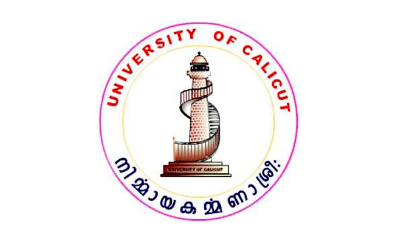

A.P.J. Abdul Kalam, in full Avul Pakir Jainulabdeen Abdul Kalam, (born October 15, 1931, Rameswaram, India—died July 27, 2015, Shillong), Indian scientist and politician who played a leading role in the development of India's missile and nuclear weapons programs. He was president of India from 2002 to 2007.

The University of Calicut is the largest University in Kerala. Established in the year 1968, it is the second university to be set up in Kerala. The University aims to nurture excellence in education and research in its catchment areas of Northern Kerala, historically consigned to the periphery of Kerala’s academic map. The University lays its emphasis on fostering quality human resource and promoting productive research that benefit both local communities and wider humanity.The University was created through a Government plan bifurcating Kerala University. As per the plan, the four post-graduate departments of the University of Kerala operating in Calicut were annexed to the new University along with fifty four constituent colleges spread across seven northern districts. With ‘Nirmaya Karmana Sree’ as it motto, the University has been able to surmount all challenges and emerge as the largest residential cum affiliating University in Kerala. With 30 post graduate departments and 395 colleges it has become a beacon of hope and enlightenment for hundreds of thousands of young men and women in North Kerala.